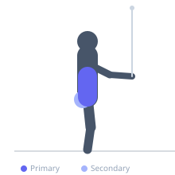
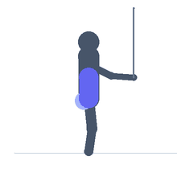

Exercise guide / Low-to-High Cable Woodchopper
Low-to-High Cable Woodchopper
The low-to-high cable woodchopper trains diagonal trunk rotation in an upward arc from a low starting position, heavily emphasizing the internal oblique on the leading side and contralateral external oblique. This movement pattern mirrors upward striking, throwing from low positions, and the drive phase of many sport actions. The low starting position also engages the hip extensors to initiate the movement, adding a functional lower-body component to the rotational chain.
Primary muscles
internal oblique
external oblique
Secondary muscles
transverse abdominis
gluteus maximus
Stabilizers
erector spinae
gluteus medius
Equipment
Cable Machine (Low Pulley)


Starting position
- Set the cable pulley to its lowest position. Stand side-on to the machine. Squat and rotate toward the stack to grip the handle with both hands near the outside of the lower knee.
Setup
- Attach a rope or single handle to the low pulley. Stand far enough away that there is tension on the cable at the starting position.
Steps
- Step 1: Begin in a rotated, partially squatted position with the handle near the low outside knee.
- Step 2: Drive upward and rotate the trunk away from the cable stack, extending the hips and knees simultaneously.
- Step 3: Pull the handle in a diagonal upward arc, finishing with arms extended above and outside the far shoulder.
- Step 4: Resist the cable and return in a controlled arc to the starting low position.
- Step 5: Complete all reps then switch sides.
Coaching cues
- Extend the hip to start the upward drive
- Finish tall with the arms extended high
Breathing
- Exhale as the handle rises. Inhale on the controlled return.
Range of motion
- Full diagonal arc from low outside the near knee to high outside the far shoulder.
Tempo
- 2-0-2-0. Drive upward, controlled return.
Common mistakes
- Using only the arms — the drive should come from extending the hip and rotating the torso
- Starting too upright — the low-loading position is essential for the full exercise stimulus
Safety
- Avoid if hip or lumbar rotation is limited — the combined hip and spinal movement requires adequate mobility
Training
- strength: 10–15 reps
- strength: 3–4 sets
- Rest: {'strength': 60}